7210B10 R.R. CENTRE PILLAR
- Path
- Procedures > 72 PANELS AND FRAME > 7210 REMOVING REFITTING > 7210B structure elements-central and rear part > 7210B10 R.R. CENTRE PILLAR
- Kind
- repair procedure (removal / refitting; the operation number is the code)
- Applies to
- all engines; all production periods
- Interactive page
- https://sloeber94.github.io/elrnDB-a156/en/#/3239031
Applies to: all engines; all production periods
 Removing
Removing
 Refitting
RefittingCheck if any of the connected parts are deformed by checking body alignment dimensions. Use appropriate measurement tools (reference rigs, templates or gauges).
Straighten the body if necessary.
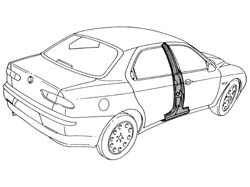
Applies to: all engines; all production periods
1. Remove the PVC treatment from the door sill using a pneumatic knife and appropriate blade.
2. Use a rotary brush to clean the panel edges in order to expose the weld spots.
3. Undo bolts (3a) and remove rear door hinges (3b).
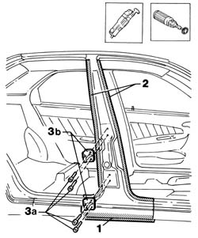
Applies to: all engines; all production periods
1. Use a circular saw to follow the cutting lines shown in the figure.
2. Cross-sections of key areas as a guide to allow the operator to adjust cutting position and depth in order to avoid damage to the underlying panels.
3. Use a chamfering machine to crop weld points around the edge of the pillar.
4. Drill out weld points in the areas shown in the figure.
Use a chisel and mallet to remove spots ground previously.
5. Remove the pillar.
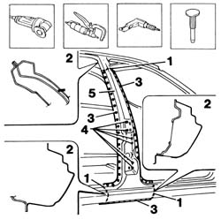
Applies to: all engines; all production periods
1. Use an air saw to cut inner reinforcement (1a) in line with the upper edge (1b) of the inner trim.
2. Use a chamfering machine to remove the weld spots shown in the figure.
Use a chisel and mallet to remove spots drilled previously.
3. Remove the car inner reinforcement.
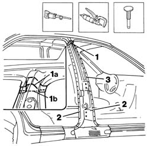
Applies to: all engines; all production periods
1. Use a chamfering machine to remove the spot welds shown in the figure.
2. Drill out the weld spots shown in the figure.
Use a chisel and hammer to remove spots ground previously.
3. Remove the interior trim.
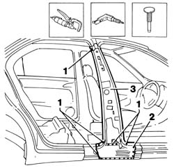
Applies to: all engines; all production periods
1. Use a drill to make equidistant holes as shown in the figure.
Straighten the car edges using a mallet and profiled stake.
Use a grinding wheel to remove the weld spot residues.
Use a rotary brush to clean treated areas.
2. Apply the electric weld paint finish.
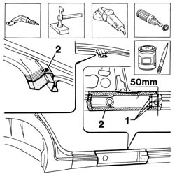
Applies to: all engines; all production periods
1. Cut the central pillar and reinforcement at the bench. Take care to leave a sufficiently wide section of steel to attach the new part to.
2. Use a drill to make holes at the points indicated.
3. Use a rotary brush to remove the corrosion-proofing from around the inner and outer edge.
Apply electrogalvanised paint on the newly-treated eges.
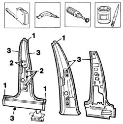
Applies to: all engines; all production periods
Refitting
Removing1. Position the inner trim correctly on the car and secure using self-locking grippers.
Check the dimension shown in the box.
2. Tack the part by carrying out some spot welds.
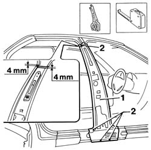
Applies to: all engines; all production periods
1. Fit the pillar reinforcement correctly to the car using self-locking clips.
2. Use the seat belt bolt to locate the part.
3. Use a pneumatic saw to trim the panels and remove excess parts.
4. Refit the rear door hinge halves using the bolts.
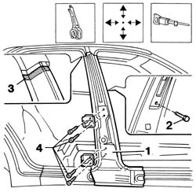
Applies to: all engines; all production periods
1. Fit the rear door.
2. Fit the front door.
Check alignment and gaps around the edges, then remove the door and hinges.
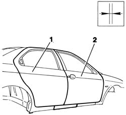
Applies to: all engines; all production periods
1. Tack the pillar reinforcement by carrying out some spot welds.
2. Use a MIG welder to seam weld the edge shown in the figure.
Use a grinding wheel to level the welds made previously
Apply rust-proofing to newly treated areas.
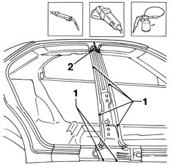
Applies to: all engines; all production periods
1. Lay the pillar on the car correctly and secure using self-locking grippers.
2. Fit the rear door hinge halves.
3. Fit the rear door.
4. Fit the front door.
Check alignment and gaps around the edges, then remove the door and hinges.
Remove the door hinge halves.
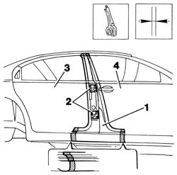
Applies to: all engines; all production periods
1. Use a circular saw to cut the door sill ready for fitting by laying it in place.
Use a circular saw to cut the upper part ready for fitting by laying it in place.
2. Trim off any excess from the panel.
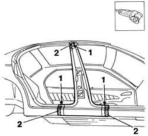
Applies to: all engines; all production periods
1. Use a MIG welder to seam weld the upper edge and door sill.
2. Use a MIG welder to fill the holes made previously.
3. Use a spot welder to weld the areas shown in the figure.
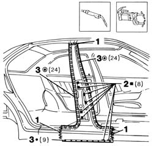
Applies to: all engines; all production periods
Correct any deformations in the panel using a profiled stake and mallet.
Crimp the reference tabs.
1. Use a grinding wheel to level the weld and remove.
Use a rotary brush to clean the newly-welded areas.
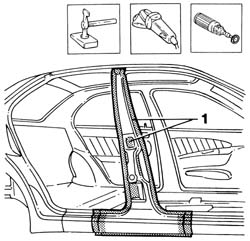
Applies to: all engines; all production periods
1. Apply rust-proofing to newly-welded areas.
Seal the joint lines between the part and the car.
Apply paint.
2. Apply wax oil inside the door sill.
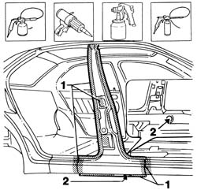